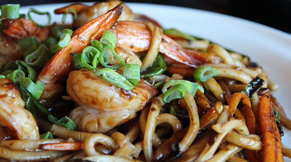

Cuando pensamos qué podemos preparar hoy para comer o para cenar, en muchas ocasiones se nos presenta un dilema. Hay días que no te apetece cocinar y buscas comidas fáciles de hacer. Otros, dispones de poco tiempo para comer y necesitas comidas rápidas de hacer y que te lleve poco tiempo en la cocina. Además, hay meses que nos surgen imprevistos y necesitamos elaborar comidas económicas. Eso si, siempre, buscas comidas ricas o deliciosas que gusten a toda la familia. En la actualidad, estamos viviendo en una sociedad que está en constante cambio. Si hace unos años hablábamos de que pasábamos mucho tiempo fuera de casa, a causa del trabajo o por otros motivos, ahora estamos mucho más tiempo en casa, pero aún así seguimos teniendo un horario muy «ajustado» que no nos permite pasar mucho tiempo en la cocina. Como bien sabes, en Cocina Casera y Fácil tenemos presente todo esto y por ello, te presentamos una selección de nuestras mejores 50 recetas de comidas fáciles, rápidas y ricas para hacer en casa. Un listado de aperitivos, entrantes y postres perfectos para ayudarte a elaborar tu menú diario y con el que disfrutará toda la familia, desde los mas pequeños de la casa, hasta los más mayores.
Comidas facieles, rapidas y ricas de hacer
